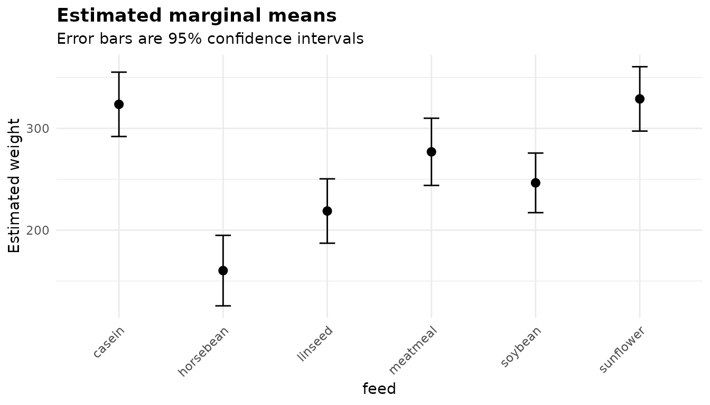

Every anovakit function returns an object of class
anovakit_fit. It is a plain named list: every table is a
data frame, every figure a ggplot2 object, and nothing
is hidden behind accessor functions. This article shows what is in it
and how to use it. The examples use chickwts, the weights
of 71 chicks raised on six feed supplements.
table(chickwts$feed)
#>
#> casein horsebean linseed meatmeal soybean sunflower
#> 12 10 12 11 14 12
fit <- anova_glm(chickwts, "weight", "feed")anova_glm() with its default Gaussian family is a
classical one-way ANOVA, which is a convenient model-based example.
Everything below applies to all eight functions; where one differs, it
says so.
What is in a fit
class(fit)
#> [1] "anovakit_fit"
names(fit)
#> [1] "method" "call" "model" "anova"
#> [5] "effect_sizes" "emmeans" "emmeans_object" "posthoc"
#> [9] "assumptions" "plots" "data_used" "n_removed"
#> [13] "conf_level" "notes" "family" "model_stats"The first fourteen components are the same for every function:
| Component | What it holds |
|---|---|
method |
The analysis that was run, as printed. |
call |
The call that made the fit. |
model |
The fitted model (lm, glm,
mlm, afex_aov), or the htest for
anova_welch() and anova_kw(). |
anova |
The omnibus test table. |
effect_sizes |
The method’s effect sizes, with intervals where they exist. |
emmeans |
Estimated marginal means (group summaries for Welch and Kruskal-Wallis). |
emmeans_object |
The emmeans grid behind $emmeans, for
further contrasts. |
posthoc |
Pairwise comparisons. |
assumptions |
The assumption checks this method needs. |
plots |
Named list of ggplot2 figures. |
data_used |
The rows and columns the analysis actually used. |
n_removed |
How many input rows are not in data_used. |
conf_level |
The level of every interval in the fit. |
notes |
Everything the function decided or could not compute. |
After those come the components a function adds for itself: here
family and model_stats.
anova_ancova() adds the slopes test and the simple slopes,
anova_rm() the sphericity table and the subjects it
dropped, and so on. Each walkthrough describes its own, and
?anovakit_fit lists them all.
Printing
print() shows the omnibus table, any notes, and the
names of the plots:
fit
#> Analysis of deviance (gaussian family, identity link, Type II)
#> --------------------------------------------------------------
#> Call: anova_glm(data = chickwts, response = "weight", groups = "feed")
#> Observations used: 71
#>
#> Omnibus test (Type II, F)
#> term sum_sq df statistic p_value
#> 1 feed 231100 5 15.36 5.936e-10
#> 2 Residuals 195600 65 NA NA
#>
#> Plots available: box, residuals, qq, emmeans
#> (use plot(x, which = "box"))summary() shows the rest: effect sizes, marginal means,
comparisons and the assumption checks. It returns an object, so you can
keep it and print it later with different digits.
s <- summary(fit, digits = 3)
class(s)
#> [1] "summary.anovakit_fit"
s
#> Analysis of deviance (gaussian family, identity link, Type II)
#> --------------------------------------------------------------
#> Call: anova_glm(data = chickwts, response = "weight", groups = "feed")
#> Observations used: 71
#>
#> Omnibus test (Type II, F)
#> term sum_sq df statistic p_value
#> 1 feed 231000 5 15.4 5.94e-10
#> 2 Residuals 196000 65 NA NA
#>
#> Plots available: box, residuals, qq, emmeans
#> (use plot(x, which = "box"))
#>
#> Assumption checks
#>
#> dispersion
#> 3010
#>
#> coefficients
#> term estimate se statistic p_value distribution conf_low conf_high
#> (Intercept) 324.00 15.8 20.400 < 2e-16 t 292.0 355.000
#> feedhorsebean -163.00 23.5 -6.960 2.07e-09 t -210.0 -116.000
#> feedlinseed -105.00 22.4 -4.680 1.49e-05 t -150.0 -60.100
#> feedmeatmeal -46.70 22.9 -2.040 0.045567 t -92.4 -0.948
#> feedsoybean -77.20 21.6 -3.580 0.000665 t -120.0 -34.100
#> feedsunflower 5.33 22.4 0.238 0.812495 t -39.4 50.100
#> ci_method
#> profile
#> profile
#> profile
#> profile
#> profile
#> profile
#>
#> Effect sizes
#> term df sum_sq partial_eta_sq partial_omega_sq
#> feed 5 231000 0.542 0.503
#>
#> Estimated marginal means (95% intervals)
#> feed estimate se df conf_low conf_high
#> casein 324 15.8 65 292 355
#> horsebean 160 17.3 65 126 195
#> linseed 219 15.8 65 187 250
#> meatmeal 277 16.5 65 244 310
#> soybean 246 14.7 65 217 276
#> sunflower 329 15.8 65 297 361
#>
#> Pairwise comparisons
#> contrast estimate se df conf_low conf_high statistic p_value
#> casein - horsebean 163.00 23.5 65 94.4 232.00 6.960 2.07e-09
#> casein - linseed 105.00 22.4 65 39.1 171.00 4.680 1.49e-05
#> casein - meatmeal 46.70 22.9 65 -20.6 114.00 2.040 0.045567
#> casein - soybean 77.20 21.6 65 13.8 141.00 3.580 0.000665
#> casein - sunflower -5.33 22.4 65 -71.1 60.40 -0.238 0.812495
#> horsebean - linseed -58.60 23.5 65 -128.0 10.40 -2.490 0.015222
#> horsebean - meatmeal -117.00 24.0 65 -187.0 -46.30 -4.870 7.48e-06
#> horsebean - soybean -86.20 22.7 65 -153.0 -19.50 -3.800 0.000325
#> horsebean - sunflower -169.00 23.5 65 -238.0 -99.80 -7.180 8.20e-10
#> linseed - meatmeal -58.20 22.9 65 -125.0 9.07 -2.540 0.013479
#> linseed - soybean -27.70 21.6 65 -91.0 35.70 -1.280 0.204145
#> linseed - sunflower -110.00 22.4 65 -176.0 -44.40 -4.920 6.21e-06
#> meatmeal - soybean 30.50 22.1 65 -34.4 95.40 1.380 0.172554
#> meatmeal - sunflower -52.00 22.9 65 -119.0 15.20 -2.270 0.026435
#> soybean - sunflower -82.50 21.6 65 -146.0 -19.10 -3.820 0.000298
#> p_adjusted adjustment
#> 3.07e-08 tukey
#> 0.000210 tukey
#> 0.332458 tukey
#> 0.008365 tukey
#> 0.999890 tukey
#> 0.141333 tukey
#> 0.000106 tukey
#> 0.004217 tukey
#> 1.22e-08 tukey
#> 0.127696 tukey
#> 0.793285 tukey
#> 8.84e-05 tukey
#> 0.739136 tukey
#> 0.220696 tukey
#> 0.003885 tukeyBoth use digits for display only; the numbers stored in
the fit are never rounded.
The tables are ordinary data frames
Every table is a data frame with a documented column layout, so base R, dplyr or data.table all work on it without conversion.
fit$anova
#> term sum_sq df statistic p_value
#> 1 feed 231129.2 5 15.3648 5.93642e-10
#> 2 Residuals 195556.0 65 NA NAThe model-based functions attach the test details to the omnibus
table as attributes, which is how print() knows what
heading to write:
attributes(fit$anova)[c("ss_type", "statistic")]
#> $ss_type
#> [1] "II"
#>
#> $statistic
#> [1] "F"The pairwise comparisons have one row per pair. p_value
is the unadjusted p-value, p_adjusted the adjusted
one, and adjustment names the method, so nothing about the
adjustment has to be remembered from the call:
names(fit$posthoc)
#> [1] "contrast" "estimate" "se" "df" "conf_low"
#> [6] "conf_high" "statistic" "p_value" "p_adjusted" "adjustment"
unique(fit$posthoc$adjustment)
#> [1] "tukey"Selecting and sorting is plain subsetting. Here are the comparisons that survive the Tukey adjustment, largest difference first:
ph <- fit$posthoc
sig <- ph[ph$p_adjusted < 0.05, c("contrast", "estimate", "conf_low",
"conf_high", "p_adjusted")]
sig[order(-abs(sig$estimate)), ]
#> contrast estimate conf_low conf_high p_adjusted
#> 9 horsebean - sunflower -168.71667 -237.68021 -99.75312 1.219887e-08
#> 1 casein - horsebean 163.38333 94.41979 232.34688 3.070197e-08
#> 7 horsebean - meatmeal -116.70909 -187.08308 -46.33510 1.062092e-04
#> 12 linseed - sunflower -110.16667 -175.92082 -44.41251 8.843233e-05
#> 2 casein - linseed 104.83333 39.07918 170.58749 2.100151e-04
#> 8 horsebean - soybean -86.22857 -152.91546 -19.54168 4.216654e-03
#> 15 soybean - sunflower -82.48810 -145.85039 -19.12580 3.884521e-03
#> 4 casein - soybean 77.15476 13.79247 140.51705 8.365309e-03The intervals in $posthoc from the model-based functions
are simultaneous. With a single-step method such as Tukey’s they use the
same adjustment as p_adjusted, so an interval that excludes
zero agrees with an adjusted p-value below 1 - conf_level.
Step-down methods such as Holm’s cannot be turned into intervals;
emmeans then uses Bonferroni intervals, and
$notes says so.
Writing a table out is one line:
write.csv(fit$posthoc, "comparisons.csv", row.names = FALSE)Read the notes
$notes is a character vector. It records every decision
the function made on your behalf (which model it chose, which rows it
dropped, which correction it applied), everything it could not compute
and why, and anything car, emmeans,
stats or afex said while fitting. None
of it is printed to the console as a warning, so this is the one place
to look.
This simple fit needed no decisions, so its notes are empty:
fit$notes
#> character(0)Ask for heteroscedasticity-consistent standard errors and there is more to say: which parts of the output use them, and what they cannot do.
robust <- anova_glm(chickwts, "weight", "feed", vcov_type = "HC3",
plots = FALSE)
writeLines(robust$notes)
#> Comparisons that use robust standard errors keep the residual degrees of freedom of the model; with very small groups of unequal variance they can be anti-conservative, and for a one-way design anova_welch() is better calibrated.
#> The omnibus F test compares deviances, so it rests on the model-based variance; the robust (HC3) covariance is used only by the coefficient table, the marginal means and the comparisons. For an omnibus test that uses it, set test_statistic = "Wald".
#> Robust standard errors (HC3) were requested, so the coefficient intervals are Wald intervals built from them; profile-likelihood intervals cannot use a sandwich covariance.Treat the notes as a checklist to read before you quote a number. They are plain text, so you can also search them, for example to flag which fits in a batch used robust standard errors:
fits <- list(
welch = anova_welch(chickwts, "weight", "feed", plots = FALSE),
glm = fit,
robust = robust
)
vapply(fits, function(f) length(f$notes), integer(1))
#> welch glm robust
#> 0 0 3
vapply(fits, function(f) any(grepl("robust", f$notes, ignore.case = TRUE)),
logical(1))
#> welch glm robust
#> FALSE FALSE TRUEWhich rows were used
Every function drops rows it cannot analyse (missing or infinite
values in the analysed columns, zero weights, and in
anova_rm() subjects with an incomplete design) and counts
them. nrow(fit$data_used) + fit$n_removed is always the
number of rows you supplied:
gappy <- chickwts
gappy$weight[c(3, 17, 40)] <- NA
g <- anova_glm(gappy, "weight", "feed", plots = FALSE)
c(supplied = nrow(gappy), used = nrow(g$data_used), removed = g$n_removed)
#> supplied used removed
#> 71 68 3$data_used holds only the analysed columns, in the form
the model saw them: grouping columns as factors, and covariates
mean-centred when anova_ancova() or
anova_manova() centred them.
str(g$data_used)
#> 'data.frame': 68 obs. of 2 variables:
#> $ weight: num 179 160 227 217 168 108 124 143 140 309 ...
#> $ feed : Factor w/ 6 levels "casein","horsebean",..: 2 2 2 2 2 2 2 2 2 3 ...Going further with emmeans
$emmeans and $posthoc cover the usual
questions: the mean of each group, and every pairwise difference. For
anything else, $emmeans_object is the
emmeans reference grid the tables were built from.
grid <- fit$emmeans_object
class(grid)
#> [1] "emmGrid"
#> attr(,"package")
#> [1] "emmeans"For example, comparing every feed with horsebean
(Dunnett-style comparisons with a control) instead of all 15 pairs:
ct <- emmeans::contrast(grid, "trt.vs.ctrl", ref = "horsebean")
confint(ct, level = fit$conf_level)
#> contrast estimate SE df lower.CL upper.CL
#> casein - horsebean 163.4 23.5 65 102.5 224
#> linseed - horsebean 58.5 23.5 65 -2.3 119
#> meatmeal - horsebean 116.7 24.0 65 54.6 179
#> soybean - horsebean 86.2 22.7 65 27.4 145
#> sunflower - horsebean 168.7 23.5 65 107.9 230
#>
#> Degrees-of-freedom method: user-specified
#> Confidence level used: 0.95
#> Conf-level adjustment: dunnettx method for 5 estimatesOr a custom contrast: the four plant-based feeds against the two animal-based ones. The coefficients follow the order of the factor levels.
levels(chickwts$feed)
#> [1] "casein" "horsebean" "linseed" "meatmeal" "soybean" "sunflower"
plant_vs_animal <- list(
"plant - animal" = c(casein = -1/2, horsebean = 1/4, linseed = 1/4,
meatmeal = -1/2, soybean = 1/4, sunflower = 1/4)
)
confint(emmeans::contrast(grid, plant_vs_animal), level = fit$conf_level)
#> contrast estimate SE df lower.CL upper.CL
#> plant - animal -61.7 14 65 -89.5 -33.8
#>
#> Degrees-of-freedom method: user-specified
#> Confidence level used: 0.95Two things to keep in mind:
- The grid carries emmeans’ default confidence level,
not the fit’s
conf_level. Passlevel = fit$conf_level(as above) when you want the two to agree. - When grouping factors enter a model additively, the means are
reported per factor and
$emmeans_objectis a named list with one grid per factor. Inanova_manova()there is one grid per response, underfit$univariate[[response]]$emmeans_object.anova_welch()andanova_kw()fit no model emmeans can use, so theirs isNULL.
Going further with the model
$model is the fitted model itself: an lm,
glm, negbin, multivariate mlm or
afex_aov. Its call refers to the analysed rows through an
environment the fit carries, so the usual model functions work on it
directly, from anywhere:
class(fit$model)
#> [1] "glm" "lm"
null <- update(fit$model, . ~ 1)
anova(null, fit$model, test = "F")
#> Analysis of Deviance Table
#>
#> Model 1: weight ~ 1
#> Model 2: weight ~ feed
#> Resid. Df Resid. Dev Df Deviance F Pr(>F)
#> 1 70 426685
#> 2 65 195556 5 231129 15.365 5.936e-10 ***
#> ---
#> Signif. codes: 0 '***' 0.001 '**' 0.01 '*' 0.05 '.' 0.1 ' ' 1
AIC(null, fit$model)
#> df AIC
#> null 2 823.2689
#> fit$model 7 777.8748anova_welch() and anova_kw() fit no model;
for them $model is the htest returned by
oneway.test() or kruskal.test().
fits$welch$model
#>
#> One-way analysis of means (not assuming equal variances)
#>
#> data: weight and feed
#> F = 19.662, num df = 5.000, denom df = 29.952, p-value = 1.177e-08Plots
$plots is a named list of ggplot2 objects, built but
never drawn. plot(fit, "name") returns one, and
plot(fit) returns the first:

They are ordinary ggplot2 objects, so + adds to them.
The plots guide shows every figure the
package makes and how to customise it. When you are fitting many models
and do not need the figures, plots = FALSE skips building
them and keeps the objects small.
Many analyses at once
Because every function has the same signature and returns the same
structure, running one analysis over several outcomes or subsets is a
loop. Here the built-in ToothGrowth data compare the two
vitamin C supplements separately at each dose:
tg <- ToothGrowth
by_dose <- lapply(split(tg, tg$dose), function(d) {
anova_welch(d, "len", "supp", plots = FALSE)
})
data.frame(
dose = names(by_dose),
statistic = vapply(by_dose, function(f) f$anova$statistic, numeric(1)),
df = vapply(by_dose, function(f) f$anova$den_df, numeric(1)),
p_value = vapply(by_dose, function(f) f$anova$p_value, numeric(1)),
row.names = NULL
)
#> dose statistic df p_value
#> 1 0.5 10.04720592 14.96875 0.006358607
#> 2 1 16.26323092 15.35767 0.001038376
#> 3 2 0.00212854 14.03982 0.963851589If you then need to adjust across those tests,
p.adjust() on the p_value column does it.
Reporting a result
Everything a write-up needs is in the tables. A small helper keeps the formatting in one place:
fmt_p <- function(p) {
if (p < 0.001) "p < .001" else sprintf("p = %s", sub("^0", "", sprintf("%.3f", p)))
}
a <- fit$anova[fit$anova$term == "feed", ]
res_df <- fit$anova$df[fit$anova$term == "Residuals"]
es <- fit$effect_sizes[fit$effect_sizes$term == "feed", ]
es
#> term df sum_sq partial_eta_sq partial_omega_sq
#> 1 feed 5 231129.2 0.5416855 0.5028847Chick weight differed between feed supplements, F(5, 65) = 15.36, p < .001, partial η² = 0.54, partial ω² = 0.50. Of the 15 pairwise comparisons, 8 were significant after Tukey’s adjustment.
Because the numbers come from the fit rather than being typed, they cannot drift from the analysis when the data change.
Saving and reproducing
A fit is an ordinary R object, so saveRDS() stores it
whole, figures included. $call records how it was made:
fit$call
#> anova_glm(data = chickwts, response = "weight", groups = "feed")Fits made with plots = FALSE are much smaller, which
matters when you store many of them.